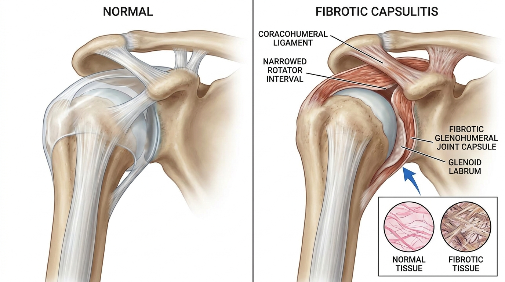

유착성 관절낭염(오십견)의 관절낭 구축 기전과 생체역학적 공간 감압 추나(SART Protocol)
유착성 관절낭염은 관절낭 자체가 염증 후 섬유화되어 두꺼워지고 오그라드는 구축성 병변으로, 관절을 감싸는 주머니(관절낭) 용적이 물리적으로 줄어드는 것이 핵심입니다. 반면 회전근개 파열은 관절낭 외부의 힘줄이 찢어지는 구조적 손상이므로, 능동 및 수동 운동범위 제한 양상과 충돌징후 소견을 통해 감별이 가능합니다.
유착성 관절낭염, 왜 회전근개 질환과 구분해야 하는가
어깨가 굳어 팔을 뒤로 젖히거나 옆으로 들어올릴 수 없을 때, 많은 사람들이 이를 단순한 근육통이나 회전근개 손상으로 오인한다. 그러나 유착성 관절낭염, 흔히 오십견이라 불리는 이 질환은 회전근개 파열이나 견봉하 충돌증후군과는 병리기전이 명확히 구분되는 별개의 질환군이다. 회전근개 파열이 힘줄 조직의 구조적 단열이라면, 유착성 관절낭염은 상완골두를 감싸고 있는 관절낭 자체가 염증 반응 이후 섬유화되어 두꺼워지고 오그라드는 구축성 병변이다.
정상적인 관절낭은 유연하게 늘어나며 상완골두가 견갑골 관절와 안에서 자유롭게 회전하도록 넉넉한 여유 공간을 제공한다. 그러나 유착성 관절낭염이 진행되면 이 관절낭의 용적 자체가 물리적으로 줄어들어, 마치 작아진 옷을 억지로 껴입은 것처럼 관절이 움직일 수 있는 절대적인 공간이 소실된다. 이러한 병리학적 특이성 때문에 단순한 근육 이완이나 스트레칭만으로는 근본적인 접근이 제한적이며, 관절낭 자체의 섬유화된 구조를 표적으로 하는 정밀한 치료 전략이 요구된다.
동결견의 3단계 병리기전: 활막염에서 콜라겐 교차결합까지

유착성 관절낭염은 임상적으로 동결기(freezing), 동결완료기(frozen), 해동기(thawing)의 3단계 경과를 거치며, 각 단계마다 조직학적 변화의 양상이 뚜렷하게 다르다. 첫 번째 동결기에서는 관절낭 내부에 활막염(synovitis)이 발생하여 염증성 통증이 야간에도 지속되고 어깨를 움직이는 모든 방향에서 날카로운 통증이 나타난다. 이 시기에는 아직 조직의 구조적 변형보다는 염증 반응이 주된 병리이므로, 통증 관리와 함께 염증이 과도한 섬유화로 이행하지 않도록 조절하는 것이 중요하다.
염증이 지속되면 두 번째 동결완료기로 진행하면서 관절낭 조직 내 콜라겐 섬유가 비정상적으로 교차결합(cross-linking)하기 시작한다. 특히 어깨 앞쪽에 위치한 오구상완인대(coracohumeral ligament)와 회전근 간격(rotator interval) 부위의 비후가 두드러지게 나타나는데, 이 구조물들은 상완골의 외회전 운동을 담당하는 핵심 인대성 조직이다. 오구상완인대와 회전근 간격이 섬유화로 두꺼워지고 단축되면 팔을 바깥으로 돌리는 외회전 운동이 물리적으로 차단되며, 이는 유착성 관절낭염의 가장 특징적인 임상 소견 중 하나로 자리잡는다. 이러한 병태생리를 고려할 때, 생체역학적 공간 감압 추나(SART Protocol)에 기반한 등급별 관절가동술은 반응성 활막염을 최소화하면서 구축된 관절낭과 회전근 간격을 기계적으로 연장하는 원리로 설계된다[1].
견갑상완 리듬의 붕괴: 대상성 견갑골 거상과 흉추 회전 증가
정상적인 어깨 관절 운동은 상완골두가 견갑골 관절와 안에서 회전하는 견갑상완 관절 운동과, 견갑골 자체가 흉곽을 따라 미끄러지듯 움직이는 견갑흉곽 관절 운동이 일정한 비율로 협조하는 견갑상완 리듬(scapulohumeral rhythm)에 의해 이루어진다. 그러나 관절낭이 섬유화되어 외회전이 제한되면, 신체는 이를 보상하기 위해 견갑골을 과도하게 거상(elevation)시키고 흉추의 회전을 증가시키는 대상성 움직임을 발생시킨다.
이러한 견갑상완 리듬의 붕괴는 단순히 어깨 관절 자체의 문제로 그치지 않고, 목과 등 상부 근육의 만성적인 긴장, 견갑골 주변 근막통증증후군, 심지어 자세성 흉추 후만의 악화로까지 연결될 수 있다. 견갑골 거상 패턴이 습관화되면 승모근 상부와 견갑거근이 지속적으로 과사용되어 이차적인 근육 통증이 오십견 본래의 관절낭 통증과 혼재되어 나타나는 경우가 임상적으로 흔히 관찰된다. 따라서 유착성 관절낭염의 치료는 관절낭 자체의 구축 해소뿐만 아니라, 이미 형성된 견갑상완 리듬의 대상성 패턴을 정상화하는 것까지 고려하는 통합적 접근이 요구된다.
감별진단: 능동-수동 운동범위, 충돌징후, 관절낭 패턴 평가
유착성 관절낭염을 회전근개 병변과 정확히 구별하는 것은 치료 방향 설정에 있어 핵심적인 진단 절차이다. 가장 중요한 감별점은 능동 운동범위와 수동 운동범위의 관계이다. 회전근개 파열의 경우 환자 스스로 팔을 들어올리는 능동 운동범위는 통증과 근력 저하로 제한되지만, 검사자가 환자의 팔을 수동적으로 움직여줄 때는 상대적으로 정상 범위에 가깝게 움직일 수 있다. 반면 유착성 관절낭염에서는 관절낭 자체가 물리적으로 구축되어 있으므로, 검사자가 아무리 부드럽게 팔을 움직이려 해도 수동 운동범위 역시 능동 운동범위와 동일하게 심각하게 제한되는 것이 특징이다.
또한 견봉하 충돌증후군에서 특징적으로 나타나는 니어 충돌징후(Neer sign)나 호킨스-케네디 검사(Hawkins-Kennedy test)는 유착성 관절낭염에서는 음성으로 나타나는 경우가 많다. 이는 통증의 근원이 견봉 아래 공간의 힘줄 마찰이 아니라 관절낭 자체의 구축에 있음을 시사한다. 아울러 관절낭 패턴(capsular pattern) 평가에서 외회전 제한이 가장 심하고, 그다음으로 외전, 내회전 순으로 제한되는 특징적인 순서가 나타나는지 확인하는 것도 중요한 감별 기준이 된다. 이러한 명확한 감별진단 기준은 회전근개 병변과 구별되는 관절낭 병변에 특이적으로 적용되는 치료 전략을 수립하는 근거가 된다.
가장 간단한 자가 확인 방법은 다른 사람이 팔을 대신 들어올려 줄 때의 반응을 살피는 것이다. 회전근개 파열의 경우 타인이 팔을 들어올려주면 어느 정도 편안하게 움직여지지만, 유착성 관절낭염이라면 타인이 움직여줘도 동일하게 뻣뻣하고 제한된 느낌이 든다. 다만 정확한 진단은 반드시 영상의학적 검사와 전문의의 이학적 검사를 병행해야 한다.
생체역학적 공간 감압 추나(SART Protocol)의 등급별 관절가동술 적용
생체역학적 공간 감압 추나(SART Protocol)는 섬유화되어 구축된 관절낭과 회전근 간격을 대상으로, 반응성 활막염을 유발하지 않는 범위 내에서 조직을 점진적으로 연장하는 등급별 관절가동술(graded joint mobilization) 기법을 적용한다. 구체적인 기법으로는 장축 견인(long-axis distraction)을 통해 관절 표면 사이의 압박을 줄이고 관절낭 전체에 균등한 신장력을 분산시키는 방법, 후방 관절낭 신장 도수조작(posterior capsule stretch mobilization)을 통해 후방 관절낭의 두꺼워진 조직을 표적으로 신장시키는 방법, 그리고 관절가동범위의 최종 지점에서 조절된 진동을 가하는 최종범위 진동기법(controlled end-range oscillation)이 단계적으로 활용된다.
이러한 등급별 접근은 무리하게 한 번에 강한 힘을 가하는 방식이 아니라, 조직이 감당할 수 있는 범위 내에서 점진적으로 부하를 증가시켜 콜라겐 교차결합으로 경직된 섬유성 구축 조직을 안전하게 연장하는 것을 목표로 한다. 급격한 신장은 오히려 관절낭 내 미세 손상을 유발하여 활막염을 재악화시킬 위험이 있으므로, 환자의 통증 반응과 조직의 저항 정도를 실시간으로 평가하며 강도를 조절하는 것이 이 프로토콜의 핵심 원칙이다. 바디올한의원의 누적 추나요법 임상 경험에서 관찰되는 관절낭 구축 조직의 점진적 신장 및 가동범위 회복 경향은, 인용된 학술 연구[2]에서 입증된 장축 견인 및 후방 관절낭 신장 기법을 통한 구축 조직의 기계적 신장 원리와 학술적으로 궤를 함께합니다.
치료 후 기전: 관절낭 용적 회복과 견갑상완-흉갑 운동비율 정상화
등급별 관절가동술을 통한 지속적인 관리 이후 기대되는 생체역학적 변화는 크게 세 가지로 요약된다. 첫째, 섬유화되어 축소되었던 관절낭의 용적이 점진적으로 회복되어 상완골두가 관절와 내에서 움직일 수 있는 절대적 공간이 확보된다. 둘째, 관절낭 용적 회복에 따라 관절내압(intra-articular pressure)이 정상화되어 관절 내부의 비정상적인 압박 상태가 해소된다. 셋째, 견갑상완 관절과 견갑흉곽 관절의 운동 비율, 즉 견갑상완-흉갑 운동비율(glenohumeral-to-scapulothoracic motion ratio)이 정상 범위로 회복되어 견갑골의 과도한 대상성 거상과 흉추 회전이 감소한다.
이러한 세 가지 기전적 목표는 단순히 통증 완화를 넘어, 어깨 관절의 기능적 회복이 상지 전체의 자연스러운 움직임 패턴 복원으로 이어진다는 점에서 임상적 의의가 크다. 유착성 관절낭염은 자연 경과상 상당수가 시간이 지나며 자연 완화되는 경향이 보고되어 있으나, 그 과정에서 발생하는 장기간의 기능 제한과 이차적 근골격계 대상 작용을 고려할 때, 관절낭 자체의 구축 조직을 직접 표적으로 하는 도수치료 접근은 수술적 개입 전 안전하게 고려할 수 있는 비수술적 보존 치료 대안으로 평가된다.
유착성 관절낭염 단계별 특징 및 접근 방식 비교
| 구분 | 동결기(Freezing) | 동결완료기(Frozen) | 해동기(Thawing) |
|---|---|---|---|
| 주요 병리 | 관절낭 내 활막염, 급성 염증반응 | 콜라겐 교차결합, 섬유화 구축 완료 | 섬유화 조직의 점진적 이완 |
| 통증 양상 | 야간통 및 전방향 운동통 | 움직임 제한이 통증보다 우세 | 통증 감소, 강직 지속 |
| 운동범위 | 서서히 제한 시작 | 능동-수동 모두 심각히 제한 | 점진적 회복 |
| 도수치료 초점 | 염증 조절, 저강도 가동 | 등급별 관절낭 신장, 회전근 간격 연장 | 가동범위 확장 및 리듬 재교육 |
결론: 관절낭 특이적 병변에 대한 정밀한 접근의 필요성
유착성 관절낭염은 회전근개 파열이나 견봉하 충돌증후군과 명확히 구분되는 관절낭 자체의 섬유성 구축 질환으로, 활막염에서 콜라겐 교차결합에 이르는 명확한 병리 진행 단계를 거친다. 오구상완인대와 회전근 간격의 비후로 인한 외회전 제한, 그리고 이로 인한 견갑상완 리듬의 붕괴는 이 질환의 핵심적인 생체역학적 특징이다. 능동-수동 운동범위 비교, 충돌징후 검사, 관절낭 패턴 평가를 통한 정확한 감별진단이 선행된 이후, 생체역학적 공간 감압 추나(SART Protocol)와 같은 등급별 관절가동술을 통해 구축된 조직을 안전하게 연장하는 접근이 어깨 관절 기능의 정상화를 도모한다.
참고문헌
- Shin, et al. (2020), 'Chuna manual therapy combined with acupuncture and cupping for frozen shoulder (adhesive capsulitis): multicenter, randomized, patient-assessor blind, clinical trial', European Journal of Integrative Medicine. DOI: 10.1016/j.eujim.2019.101012
- Page, et al. (2014), 'Manual therapy and exercise for adhesive capsulitis (frozen shoulder)', Cochrane Database of Systematic Reviews. DOI: 10.1002/14651858.cd011275